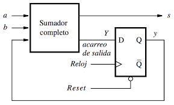

Los sumadores son variables, al igual que los contadores, pero su uso no es el mismo. Se usan para acumular valores. Por ejemplo, si quisiéramos saber cual es la suma de todos los números del 1 al 100, necesitamos, con un ciclo, ir desde 1 hasta 100, y en cada paso del ciclo, sumarle a una variable, la que sería nuestro sumador, los valores que irá tomando el contador en cada caso.
es un circuito digital que realiza la adición de números. En muchas computadoras y otros tipos de procesadores se utilizan sumadores en las unidades aritméticas lógicas. También se utilizan en otras partes del procesador, donde se utilizan para calcular direcciones, índices de tablas, operadores de incremento y decremento y operaciones similares.
Aunque los sumadores se pueden construir para muchas representaciones numéricas, tales como decimal codificado en binario o exceso-3, los sumadores más comunes funcionan en números binarios. En los casos en que se utiliza el complemento a dos o el complemento a uno para representar números negativos, es trivial modificar un sumador para convertirlo en un sumador-restador. Otras representaciones de números con signo requieren más lógica alrededor del sumador básico.
SEMISUMADOR:
El semisumador suma dos dígitos binarios simples A y B, denominados sumandos, y sus salidas son Suma (S) y Acarreo (C). La señal de acarreo representa un desbordamiento en el siguiente dígito en una adición de varios dígitos. El diseño más simple de semisumador, representado a la derecha, incorpora una puerta XOR para S y una puerta AND para C. Dos semisumadores pueden ser combinados para hacer un sumador completo, añadiendo una puerta OR para combinar sus salidas de acarreo. La tabla de verdad para el semisumador se detalla seguidamente:
SUMADOR COMPLETO:
Un sumador completo suma números binarios junto con las cantidades de acarreo. Un sumador completo de un bit añade tres bits, a menudo escritos como A, B y Cin siendo A y B son los sumandos y Cin es el acarreo que proviene de la anterior etapa menos significativa. El sumador completo suele ser un componente de una cascada de sumadores, que suman 8, 16, 32, etc. números binarios de bits. El circuito produce una salida de dos bits, al igual que el semisumador, denominadas acarreo de salida (Cout) y suma S.
Un sumador completo se puede implementar de muchas maneras diferentes, tales como con un circuito a transistores o compuesto de otras puertas. Un ejemplo de implementación es expresado con las siguientes ecuaciones:

Se puede construir un sumador completo a partir de dos semisumadores conectando las entradas A y B a la entrada de un primer semisumador, conectando su salida de suma a una de las entradas del segundo semisumador, conectando el acarreo de entrada Cin a la otra entrada y conectando los acarreos de salida de los semisumadores a una puerta OR. La ruta crítica de un sumador completo recorre ambas puertas XOR y hasta llegar a la salida S.
SUMADOR CON PROPAGACION DE ACARREO:
Un sumador con propagación de acarreo, también denominado sumador de acarreo serie, es aquel constituido por varios sumadores completos en los cuales el acarreo de salida se conecta a la entrada de acarreo del sumador siguiente. Sin embargo, puede observarse que el primero de los sumadores puede ser reemplazado por un semisumador suponiendo que el acarreo de entrada Cin es cero.
El esquema de un sumador de acarreo serie es sencillo, lo que implica un corto tiempo de diseño; sin embargo, el sumador es relativamente lento ya que cada etapa debe esperar que se calcule un acarreo de entrada de la etapa previa. El retardo de propagación puede ser fácilmente calculado por un inspección del esquema circuital. Cada sumador completo requiere tres niveles de lógica. En un sumador de acarreo serie de 32 bits, existen 32 sumadores completos de modo que el retardo en la ruta crítica (en el peor de los casos) es de 3 X 31 (desde la primera etapa hasta la última) sumando 2 retardos más en el último sumador, dando un total de 95 veces el retardo de una puerta lógica.
SUMADOR CON ANTICIPACIÓN DE ACARREO:
Para reducir el tiempo de cálculo, fueron creados los llamados sumadores con anticipación de acarreo. Funcionan creando dos señales (P y G) para cada posición de bit, basándose en si un acarreo se propaga a través de una posición de bit menos significativa (al menos una entrada es un 1), generada en esa posición de bit (ambas entradas son 1) o es nulo en esa posición de bit (ambas entradas son 0). En la mayoría de los casos, P es simplemente la suma de salida de un semisumador y G es la salida de acarreo de éste. Después de que se generen P y G, se crean los acarreos para cada posición de bit. Algunas arquitecturas avanzadas de acarreo anticipado son la cadena de acarreo de Mánchester, el sumador de Brent-Kung y el sumador de Kogge-Stone.
Algunas otras arquitecturas de sumador de varios bits dividen el sumador en bloques. Es posible variar la longitud de estos bloques basándose en el retardo de propagación de los circuitos para optimizar el tiempo de cálculo. Estos sumadores basados en bloques incluyen el sumador de salto de acarreo (o desvío de acarreo) que determinará los valores de P y G para cada bloque en lugar de cada bit, y el sumador de selección de acarreo que genera previamente los valores de suma y acarreo para cualquier posible acarreo de entrada al bloque, utilizando multiplexores para seleccionar el resultado apropiado cuando se conoce el bit de acarreo.
SUMADOR CON ACARREO ACUMULADO:
Si un circuito de adición se usa para calcular la suma de tres o más números, puede ser ventajoso no propagar el resultado de acarreo. En su lugar, se utilizan sumadores de tres entradas, generando dos resultados: una suma y un acarreo. La suma y el acarreo pueden ser introducidos en dos entradas del sumador posterior de 3 números sin tener que esperar la propagación de una señal de acarreo. Después de todas las etapas de adición, sin embargo, se debe usar un sumador convencional (tal como el de propagación de acarreo o de acarreo anticipado) para combinar los resultados finales de suma y acarreo.
A continuación anexo algunos videos relacionados al tema para facilitar la comprension del mismo: